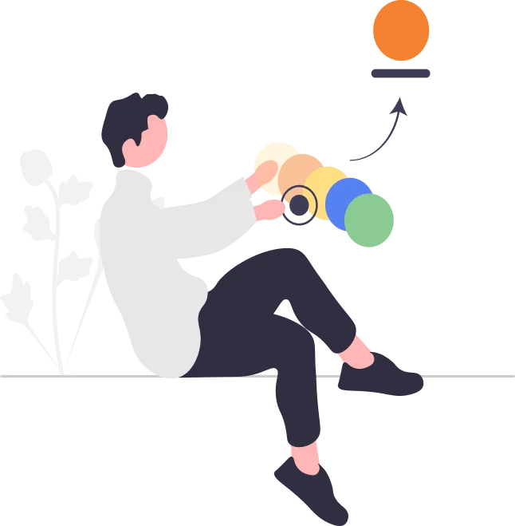
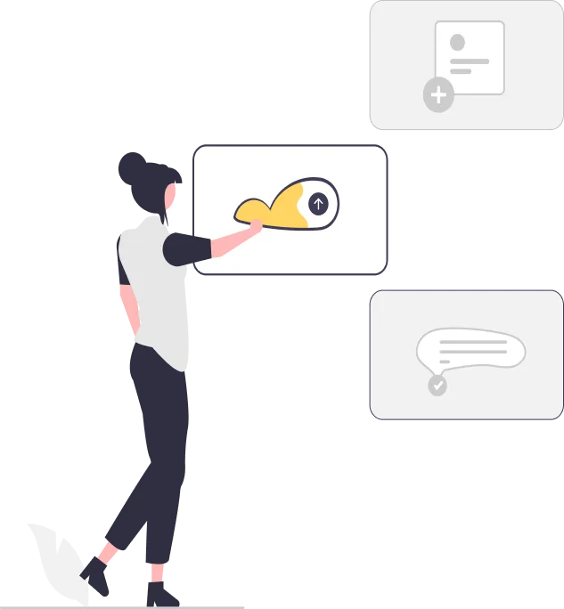
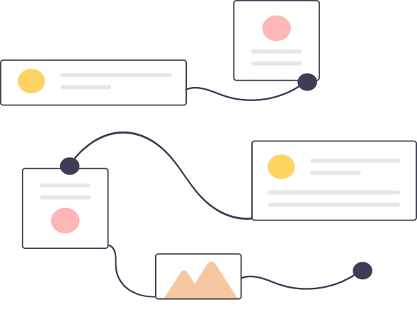
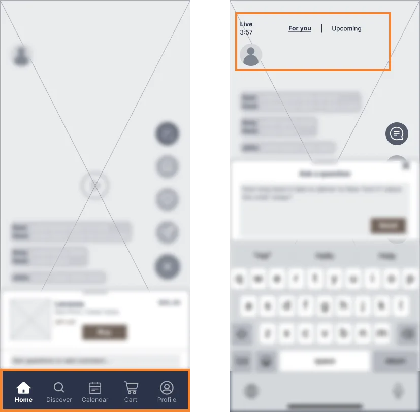
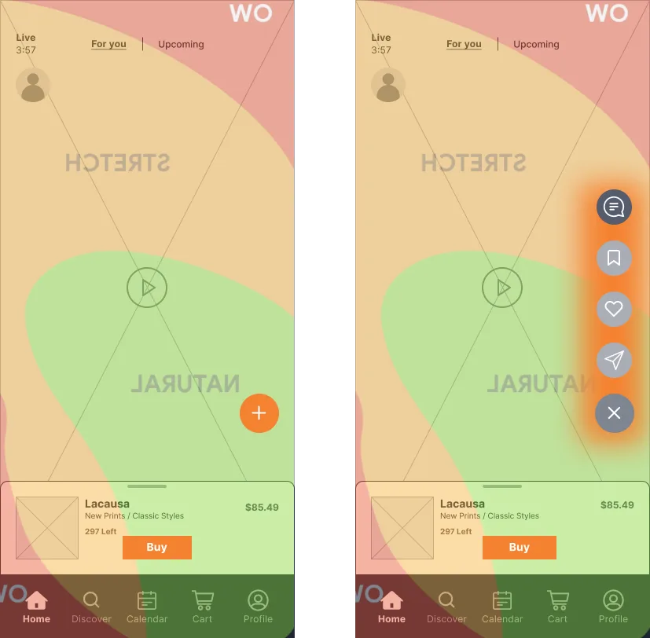
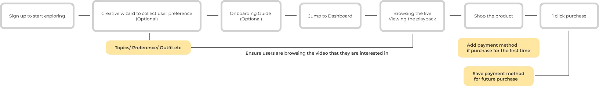
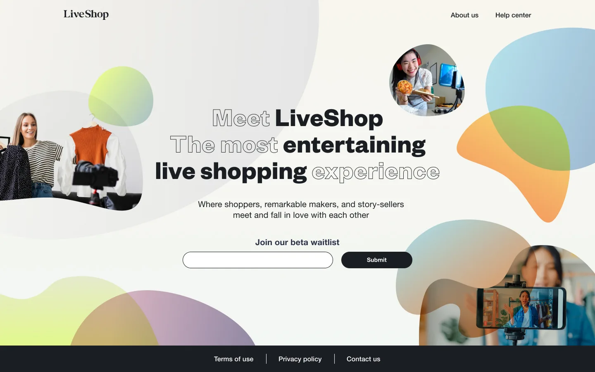
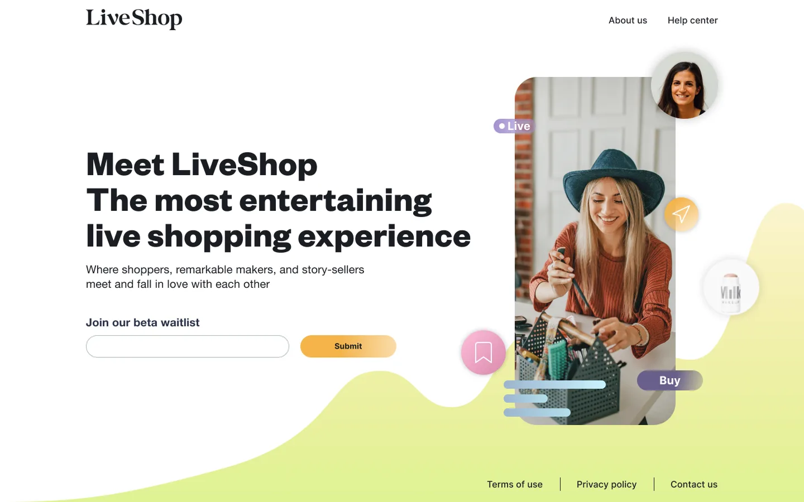

build a live-streamed e-commerce platform for Gen Z
For data security, I have omitted confidential information in this project. All the data in this project belongs to me
I worked at McKinsey&Company in New York City as an UX designer to help our client set a design strategic direction, build digital products and explore design solutions for their specific needs. One of the client project I actively participate is to deliver GenZ value for one of the world's biggest e-commerce company through designing a live-streamed platform.
As a designer, I conducted user research and competitive analysis to gain insights for conceptualization. Moreover, I
prioritize features and build user flows to meet MVP target. Finally, we research, craft, validate, build and pilot MVP products which launched in 2023. At the same time, I collaborated with developers and business analysis to "coach" our client on how to build a business-driven product

Before initiating the project, I, along with business team, had a meeting with our client to understand what they want to build and how can we help them in an efficient way. Our client, which is one of the world pioneer e-commerce platform, wants to enlarge their market through livestream channels. With further discussion and market analysis, we decide to build an e-commerce mobile platform with main feature of livestream for Gen Z to shop while browsing.
After identifying the core challenge, I started to think, as a UX designer, how can I utilize design impact to realize the goal within other business and development contribution. To start with, I break out the challenge into 4 design problems:

1. What Color Story will make user get engaged in
2. What kind of user flow make user easier to shop


3. What features should be prioritized in MVP
4. How to make the interactions fun and engaging for Gen Z users
At the beginning of this project, I conducted extensive preliminary research, encompassing a variety of methodologies such as user research, competitive analysis,and trend analysis. These efforts were aimed at uncovering the pain points, motivations, and expectations of key stakeholders—ranging from influencers and live stream hosts to Gen Z consumers.
Complementing this, my competitive analysis of leading platforms like TikTok Shop, Instagram Live, and Youtube Live revealed emerging trends and best practices for the five design problems I try to explore:
Through user interviews and qualitative surveys, I help our client target the main user group and gained insights into how users want to interact with live shopping platforms, their pain points, and the potential needs.
Here are the three main groups our product planned to serve:
While browsing trend analysis in research phase, I found that reports from McKinsey & Company highlight that Gen Z values personalization, interactivity, and social responsibility. Moreover, WGSN (a global trend forecasting agency) notes that Gen Z is drawn to bright, bold colors (like neon) or even dynamic gradient.
At the same time, learned from competitive analysis (TikTok, Snapchat, Instagram, etc.), warm tones can promote purchasing desire. Warm tones are naturally eye-catching and stand out more than cooler tones. This makes them effective for drawing attention to products, promotions, or calls-to-action.
After presenting the data and report analysis to our client, we decide to use a mixture of warm color as the main color palette of the product.
The use of bright, lively colors not only reflects the youthful and dynamic nature of this demographic but also enhances engagement and creates a visually appealing shopping experience. This step involved exploring various design options and conducting quick usability tests to validate the aesthetic and functional appeal.
Through surveys and behavioral observations, we found that Gen Z users prefer to shop or browse information during fragmented free time. Moreover, they often use their phones with one hand, as they are usually engaged in other activities simultaneously, such as taking the subway or shopping at the grocery store. So it is crucial for designers to consider the usability and accessibility of single-hand mode.
In order to pitch our client within the new designs, I initiated a team learning on WCAG Compliance and NN Group regarding usability and accessibility. Furthermore, I present the key result from rapid user testings and user behavior observations to ensure that the design not only meets the standard ux requirement but also be gain acceptance and satisfactions from users.


After conducting user interviews and user survey and analyzing from McKinsey customer reports, I, along with the business analyst, have gained insights that Gen Z are a group that are more preferred an immersive experience without any distractions when viewing live-streaming. Data from digital product usage shows that Gen Z prefers simple, intuitive interfaces but also desires high levels of personalization. Within those insights, we decide to move forward to simplifying the user onboarding and shopping workflow and categorized feature priority using Kano Model.


The insights from this research phase not only informed my understanding of the live streaming ecosystem but also provided a solid foundation for the subsequent design process. By synthesizing these insights, I was able to define clear design opportunities, such as enhancing interactivity, streamlining the purchasing journey, and creating tools that empower both creators and consumers. These outcomes directly guided me to mapped out the user journey and user flow for different user groups. At the same time, I collaborate with the business team to prioritize and group different features in each sprint based on business and design need.


I transitioned into the design phase, beginning with low-fidelity wireframes to map out the core user flows and interface structure. These wireframes were iteratively refined based on feedback and insights gathered during the research phase, ensuring alignment with user needs and business goals.





Building on the insights from our comprehensive research and iterative design process, our product successfully launched in 2023, delivering a seamless and engaging live shopping experience tailored to the needs of influencers, Gen Z consumers, and live stream hosts.
The prototype below highlight the key features and interactions of the product, demonstrating how our team transformed user insights into a dynamic and intuitive interface. From vibrant visuals that resonate with Gen Z.
During the beta phase of the product, we conducted 8 user testing sessions with potential users. These sessions were designed to gather actionable feedback on usability, functionality, and overall user experience. Through a combination of task-based testing, A/B testing, and in-depth interviews, we identified key pain points and areas for improvement in the whole user journey:


The experience in Mckinsey is different from my previous in-house design journey. These two projects are jam-packed with a lot of exploration, trials and challenges in a short time. And I, along with the whole team and our clients, finally get there!